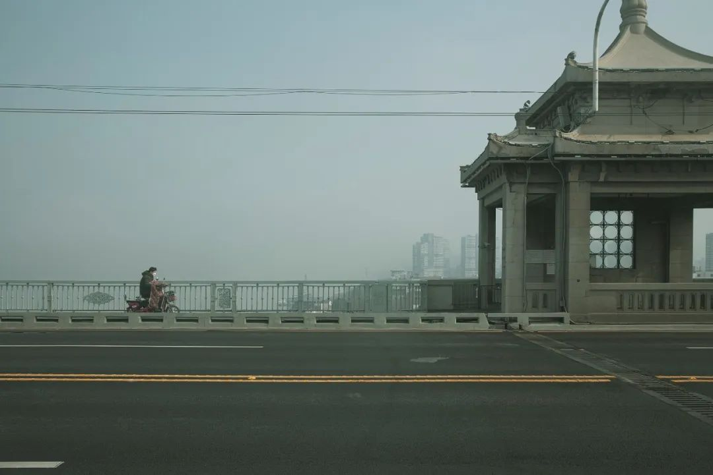
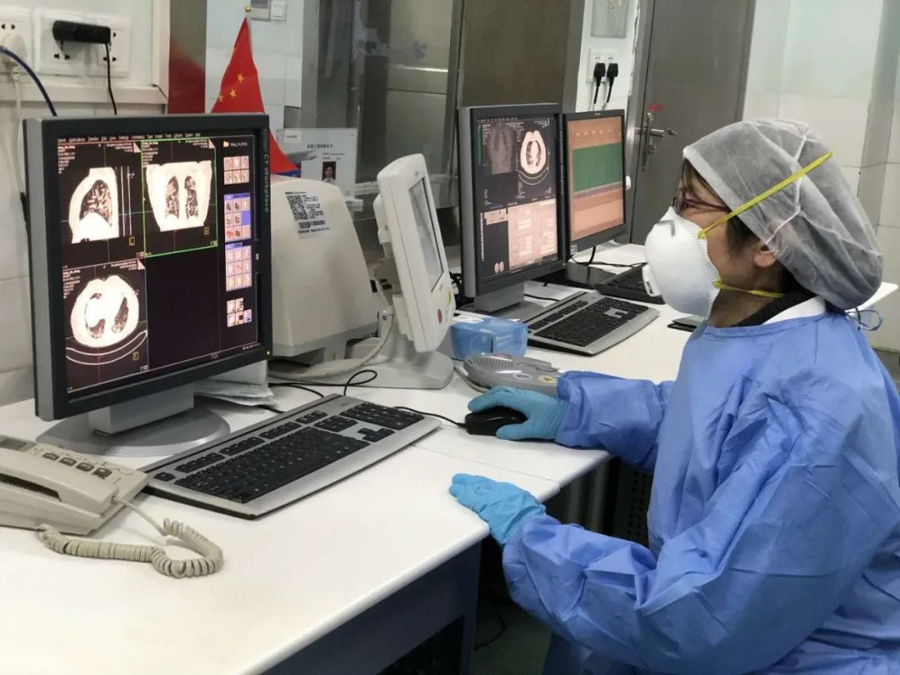
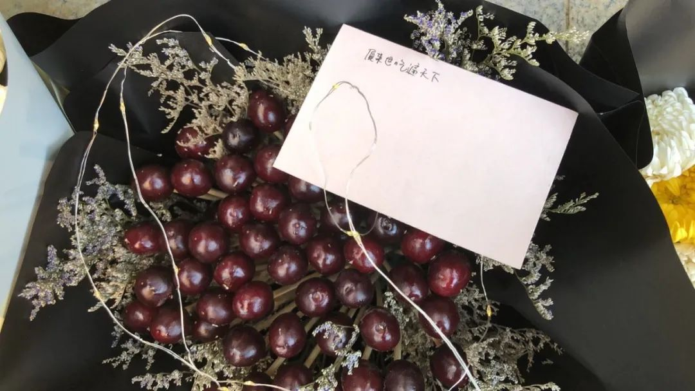
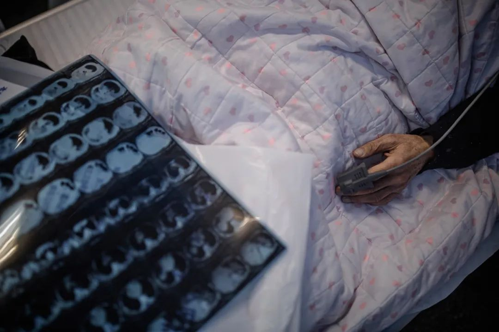
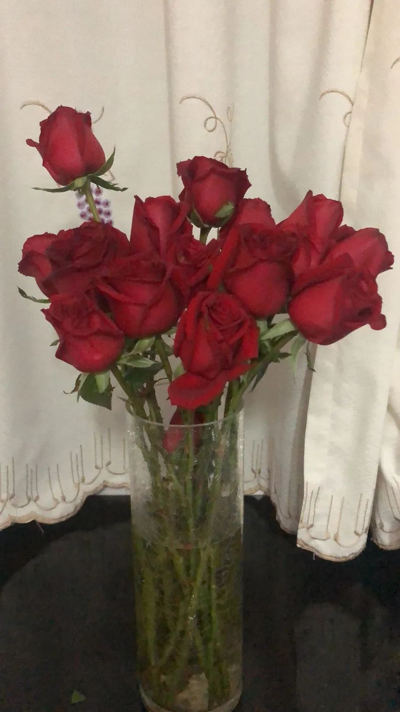

新冠疫情里的生与死
原文链接 备份链接 武汉新冠肺炎疫情肆虐，每一个家庭都在举全家之力，从防疫生死线上拽住家人。患者、家庭、医院……求医与救治环环相扣。有的人最终去世，更多的人在治愈出院，在历经煎熬、等待、悲痛、喜悦之后，用人心和勇气筑起的这道防疫线，正在变 …

2020年2月23日，武汉封城整一个月。以下是武汉在过去一个月中的31个片段，它们来自一线记者的所见、来自市民在社交平台上的记录，它们汇聚在一起，构成了这座城市最难忘的一段记忆。
策划*****｜*********《人物》编辑部
2020年01月23日
小雨 4℃~6℃
武汉封城。出租司机李少云在下午三点接到一个订单，送一位滞留在武汉的大学生回鄂州。原路返回时，在乡道和国道的交界处，她被一辆路虎车拦住，车主劝她，别回去啦，现在的人已经出不去了。那是2020年1月23日晚上七点半，武汉周边的路口已经全部封锁，路虎车的后面，密密麻麻地排着数百辆等待出城的车，焦急的人们有的下了车观望，就站在路边，望着离开武汉的方向。
2020年01月24日
小雨 4℃~7℃
除夕夜。晚上11点44分，武汉大学中南医院重症医学科主任彭志勇刚刚离开医院。回家的路上，他接到了一位记者打来的电话，被问到「压力大吗」，他叹了一口气，面对一些问题，他显得欲言又止。采访即将结束时，零点已过，他对记者说：「新年好啊，新年要平安，以前我们都说新年快乐，现在我们说新年平安。健康才是最重要的。」

湖北省武汉市汉秀剧场的外墙打出「武汉加油」字样 尹夕远 摄
2020年01月25日
雨夹雪 3℃~4℃
大年初一，家在武汉的记者安琪独自工作了一整天。从1月21日开始，她连续在发热门诊采访，为了避免传染家人的可能，她搬到了楼上邻居空置的房子，自我隔离。这天的午饭是一碗面，配菜是母亲从小区后面的荒地里刨来的野菜。
封城之前，她的父母完全没把病毒当一回事儿，也没有青菜和肉类的储备。直到除夕夜才发现超市生鲜区被附近居民扫荡一空，没有任何绿色。随后，妈妈戴上口罩去后山找还没开花的油菜苔和荠菜，摘满一袋子，带回家包成饺子，搭配面条。这成了蔬菜恢复供应之前，安琪家里唯一的绿色。
2020年01月26日
雨夹雪 3℃~1℃
汉口医院护士@三点半 开始自我隔离的第一天。她在微博上用以下文字做了记录——
「大年初一13：00，我们在没有任何防护措施、只有一个口罩和头套、手套的情况下徒手抢救一个高度疑似肺炎的病人，好多套cpr不停地推药电除颤，我到现在还能听到他最后生命衰竭的声音，可惜最后他还是没有挺过来，死于心梗。
结束之后，我重新换了一套没有意义的科室备用的隔离服，换上了干净口罩，换上了早就不知道怎么弄破的乳胶手套，和同事一起去给他把身上的导管都拔了，给他盖好被子就默默地回来了……事情做完了，我赶紧冲到水龙头狠狠的洗手洗脸，我也知道应该没有意义了，可是我只想用冷水让我清醒这已经发生的事情。我只想哭，我想回家，可我又不敢回家，家里还有家人。事情已经发生了，也只好自求多福。
同事开玩笑说我们也算是同生共死了，先合张影，等14天潜伏期我们都没发病好好的，再合一张，不行就一起住院去凑个包间。
今天隔离第一天，我也希望我们能好好的。
也一定会的。」

图源三点半微博
2020年01月27日
晴 -1℃~6℃
武汉女孩李梦的预产期。武汉封城后，她做产检的医院设立了发热门诊，暂时不再接收新患者——这也是很多身在武汉的孕妇共同面临的困境。直到大年初一，李梦仍然没有找到可以接收的公立医院，只好在一家私立医院做了住院预约。
预产期这天，一切安好。深夜，阵痛开始了。第二天一早，李梦和家人去了医院，下午3点多进产房，晚上9点多，宝宝出生，顺产，是个男孩，她给孩子取了一个小名叫「佑佑」，保佑的佑，希望他能平平安安。
2020年01月28日
晴 -1℃ ~8℃
38岁的武汉人桃子在这一天终于回到武汉，带着她的女儿和母亲。
此前，她们去外地旅行，但只能躲在郊区的临时住处吃泡面，生怕一不小心就因为是武汉人而被举报，身在外地的武汉人建了临时的微信群，分享着各种能够回到武汉的方法，桃子按照其中的方法购买了路过武汉的高铁票——那是她坐过的最空旷也最安静的一列高铁，车厢里不到十个人，安静的像没有人。
到达武汉时，列车停车，人们忽然不约而同地起身下车。隔着口罩，他们看不到彼此的表情，只挑着眉毛互相打招呼。下车之后，桃子对坐在自己后面的群友说，「终于回来了。」

武汉火车站站台 尹夕远 摄
2020年01月29日
晴 -1℃~12℃
一首名为《武汉伢》的歌曲在这一天刷爆了武汉人的朋友圈。
这是武汉封城期间，由3位武汉音乐人创作、17位武汉文艺工作者演唱的公益歌曲。每位演唱者都在全国不同的地方，他们用手机录制，最终传回上海合成。歌里描绘的是武汉最普通的生活日常，夏天的竹床，热干面，黄鹤楼，江汉路，二厂汽水……但MV里记录的则是武汉几乎空无一人的街道，MV的最后写道，「我从未见过这样的武汉/但我相信/明媚的阳光终会照亮这片土地/樱花会再次盛开/过早的人们依旧吃着热干面/街道会再次人声鼎沸/我们会摘下口罩/去自己想去的地方/见想见的人。」
当天，武汉作家方方在微博上转发了这首歌，写道：「热泪盈眶。」
2020年01月30日
晴 0℃~13℃
当晚，网友@一宝 suer 在武汉的二环路上拍到了魔幻的一幕——一只野猪在空旷的二环路上狂奔，随后，他将这则视频发上了微博，引来无数人围观。13天后，还有人记挂着这只猪，在这条微博下留言：「不知二师兄怎么样了，平安到家没有，还是又跑进了什么人的梦里。」
2020年01月31日
晴 0℃~10℃
经停武汉的高铁上，一位记者跟列车员说想在武汉下车，对方说让她等回复。过一会儿来了一个列车长，检查身份证，名片，还要看采访函……没带采访函的记者心里打鼓，担心不被放行。
结果，列车长说，「如果你没有证明，就没有专用通道了，要和普通人一块儿出站。」说完，列车长停了几秒，很认真地说：「下了车，一定要做好防护。」下车后，这位记者看到的第一眼的武汉，有一层薄雾，安静，空无一人。在去往酒店的路上，只有几辆急行的救护车和她擦肩而过，但她始终记得列车长的那双眼睛，「很亮」。
2020年02月01日
晴 4℃~13℃
武汉封城的第十天。连续几天的放晴，整个城市的气温逐渐回升。家住东湖边一个老小区的女孩木木打开了阳台的窗户，发现一楼院子里搭的棚子顶上，睡着一只黑色的猫，隔着四层楼的距离，她都能感觉到它那黑色的毛集满阳光后的松软，以及伴着肚子起伏的呼噜声。她对着它喊：「喂，猫！」它一动不动，旁边的橘猫突然起身，随后又继续酣睡着。
木木说，封城以来，她从没下过楼，但那一刻，她几乎产生了一种错觉，忘记了疫情的存在，好像回到了往常的日子。转身回到现实中，她在豆瓣记录下了这个瞬间，写道：「不知道可以随随便便下楼、随随便便逗猫的日子，躺在未来日历的哪一页。」

图源豆瓣
2020年02月02日
多云转晴 6℃~11℃
距离火神山医院接收首批患者只剩两天时间。深夜，仍有工人在通宵赶工。第二天上午，几位熬了一夜的工人坐在病房的一楼抽烟，解困，有记者来采访，问他们，通宵有没有加班费，一个小包工头回复说，没问。一旁还有工人在修水管，他们戴的是薄薄的粉红色口罩，手成天泡在水里，发白了。离开火神山回到住处，这位记者在当天的采访手记写道：「这些个体，是这样一个奇迹工程里最值得赞美的部分。」
2020年02月03日
多云转晴 0℃ ~ 12℃
上午十点多，武汉大学中南医院影像科副主任张笑春发了一条朋友圈，「别再迷信核酸检测了，强烈推荐CT影像作为诊断2019-nCoV肺炎的主要依据。」这是一线医生首次公开质疑核酸检测的可靠性问题。当时，核酸检测是确诊新冠肺炎的唯一依据，但由于检测存在较高的「假阴性率」，大量疑似病人无法得到及时收治。两天之后，国家卫健委印发第五版新冠肺炎诊疗方案，规定将CT影像作为临床诊断标准（仅限于湖北省）。
十几天后，在接受《人物》采访时，张笑春说，她的父母也在这次疫情中双双感染，1月20号左右，她为母亲办理新冠住院手续时，看到在医院大厅很多病人，有人抱着肚子在地板上躺着，有人抱着头，有人猛咳，她看到他们手里提的CT片子，其中有一张片子就是她经手拍的。「那双肺已经白了，哎哟，当时我那个心真的是被刺痛了。」

张笑春医生在电脑前工作 图源网络
2020年02月04日
晴 0℃~14℃
立春。武汉市第五医院的发热门诊中，输液室、留观室和抢救室都挤满了人，无处下脚。抢救室门窗没关，站在门口就能看见医护们在紧张地操作着。门诊外，一位大爷趿拉着拖鞋，气定神闲地啃着甘蔗。路过的记者问他：「你怎么不戴口罩？在医院门口很危险。」他回头看了一眼记者，说：「我不怕得病，我死了算了。」这位记者说，那是她在武汉看到的最放松的一个人。
2020年02月05日
晴转小雨 3℃~15℃
志愿者司机成冬这一天接到的订单中，有几单来自一线的护士。
早上乘车的那位护士，20多岁，上车就哭了。因为在医院的CT筛查中查出肺病，她被要求回家待命，但她不愿意休息，因为「我的同事都在一线，我回家心里很愧疚」。
还有一位医生，是个孕妇，怀孕七个月，住在距离医院18公里的地方，她说同事们都在一线，自己也想要加入他们，能帮一些是一些。最初，社区有车接送人，后来知道她是医生，没人敢载她了，她就四处求人带她去上班。
送完这位医生，成冬把车停在路边，哭了整整一个小时。他说，从这一天之后，他依旧每天跑车，接人，也听了无数悲伤、糟糕、痛苦的故事，但他却再也没有哭过。

成冬送护士去上班 图源网络
2020年02月06日
小雨转阴 4℃~6℃
武汉首个方舱医院启动的第二天，在病房中读福山的付先生成为其中最著名的患者。付先生是方舱医院的第一批入院患者。入院晚上，他戴着口罩，倚在病床上读书，读的是著名日裔美籍学者弗朗西斯·福山的《政治秩序的起源：从前人类时代到法国大革命》。这一幕被《湖北日报》的记者拍了下来，随之火遍全网。2月7日，弗朗西斯·福山本人在推特上转发了这张照片。很多网友感叹，「阅读是一所随身携带的避难所。」
据《湖北日报》随后的报道，付先生今年39岁，是留美博士后，在美国佛罗里达州立大学教书，研究方向是高分辨冷冻电镜。这次过年，他回武汉探望父母，没想到自己和家人相继感染上新冠肺炎。那则报道的评论区，读者们纷纷询问付先生是否结婚，在此后的很长一段时间内，这本书的出版方理想国每天都能收到微博私信询问，「那个读福山的小哥出院了吗？」

在方舱医院看书的付先生 图源网络
2020年02月07日
阴转多云 2℃~7℃
这天晚上，武汉姑娘KxxKiko听到邻居用小号吹起了《思念曲》，她回忆道，当时自己推开窗户，「听得痴了。」乐曲声中，还混合着其他邻居的哨声和掌声。她用视频记录下了这一幕，并将这则32秒的视频发上了微博，写道：「愿音乐治愈每个人的心灵，晚安。」
此时，武汉市中心医院的门诊楼外，堆满了人们自发送来的鲜花，其中一捧是车厘子做的，「花束」中有一个小纸条，上面写着：「愿来世吃遍天下。」据该院官方消息，李文亮医生于2020年2月7日凌晨2点58分抢救无效去世。

武汉市中心医院的门诊楼外的「花束」罗婷 摄
2020年02月08日
多云转晴 1℃~10℃
武汉人张琼终于为母亲找到了一个可以做透析的私人血透中心。她的母亲今年79岁，患有尿毒症，长期做肾脏透析，每周三次。但疫情爆发后，母亲常去做透析的医院被征收为定点发热医院，透析室也随之关闭。如果不能及时透析，基础病缠身的母亲最多只能挺一周。
七天里，她带着母亲辗转武汉各大医院寻找可以透析的地方。即便母亲多次核酸检测均为阴性，也没有任何新冠肺炎的症状，还是无处透析。理由是，张琼的母亲有慢性肺炎，而根据医院的规定，「只要有肺炎就不收治」。这一天，在私人血透中心自费为母亲透析的张琼说，她的愿望是下次透析时，她们不会被这家私人血透中心拒绝。
2020年02月09日
晴 1℃~13℃
在武昌方舱，新冠肺炎患者付丹看到了病友们自发地跳起了广场舞。
她是在3天前的雨夜住进方舱的。住进来的第一天，方舱初建，她经历了湿冷的，没有空调的夜晚，靠着安定才入睡。第二天，她看到有人在收垃圾，以为是清洁工，后来才知道是病友。那天起，情绪消极的付丹也开始行动起来，自发做一些志愿服务。住进方舱的第四天，方舱的暖气和新被子来了，厕所有灯了，可以洗澡了，漏雨的地方也有遮挡了。付丹记得，跳舞的这天晚上，病友们特意同时用手机进入同一个直播频道，让音乐伴奏有了立体环绕的效果。接受《人物》采访时，付丹说，「其实动作看得清不清楚，齐不齐啊，是次要的。主要是在于那个心情。」
病人们在医护人员的带领下跳起了广场舞 图源风视频
2020年02月10日
小雨 5℃~10℃
武汉女孩薇薇的妈妈在这一天出院了。刚刚过去的一月，这位女孩因为新冠肺炎失去了爸爸和奶奶，妈妈也因新冠肺炎住院治疗。出院这天，薇薇妈妈回家第一顿饭吃的是湖北特色排骨鱼面汤，家人提前买了1000多块钱的肉囤着，要让她「餐餐都有肉」，这位妈妈自己也很积极，虽然没法儿出门，每天都会打开手机对着视频跳操。薇薇说，解除封城后，最想做的事情是和妈妈一起出去旅行，去哪里都好。
2020年02月11日
阴转多云 5℃~13℃
武汉市中心医院医生蔡毅查完房、脱下防护服，在清洁区打开手机，微信群弹出一则消息：林军走了。
林军是中心医院南京路园区门口小卖部的老板，做生意十几年，因为做事麻利、为人实在，和很多医生护士都成了熟人，「医院院长书记换了一茬，但林军还在。」两天前，蔡毅曾接到麻醉科老主任打来的电话，问他有没有床，说「小卖部的林军感染了」。两天后，在中心医院急诊留观室，林军走了。
蔡毅发了条长长的朋友圈，写道：「我们都是小人物，在这场疫情的洗礼下，默默地付出，默默地承受生离死别。」

新冠肺炎患者和他的CT底片 尹夕远 摄
2020年02月12日
多云转多云 8℃~14℃
新冠病毒被世界卫生组织正式命名为「COVID-19」。同一天，武汉网友@乐祁 在微博记录了两件令她感动的小事——
「我单位的一个供应商，并不是武汉人，年前回老家了。1月27日就开上大货车来汉支援，除了给我们单位保供，还义务运输物资。今天车跑坏了，没有抱怨，全是感激。
小区保安上班路上摔了一跤还在坚持执勤，业主自发捐款筹了3720块钱，保安只拿了1000块钱，剩余的钱物业又回馈业主买了台消毒机给小区消毒。」
@乐祁写道：「他们就是这样你我身边的普通人，可此刻，朴素的善意和执着的勇气让他们如此闪光又高贵。」

2020年02月13日
多云转小雨 9℃~17℃
依据新的临床诊断标准，此前一天，湖北全省新增新冠肺炎病例14840例。一位金银潭医院的护士在日后接受采访时，谈到了那位令她印象最深的逝者——一个非常乐观非常礼貌的爷爷，最后没能抢救回来，离开了。清理遗物的时候发现，爷爷包里装着一沓手抄的乐谱。老人遗体被运走后，护士说，「我特别伤心。」
2020年02月14日
小雨 5℃~17℃
情人节。参与建设火神山医院的老刘感染了新冠肺炎，在这一天转入火神山医院治疗。家里人和他视频，隔着屏幕鼓励他，「犟到吃，好好睡，什么都不想，很快就会好起来的」，「你再也不用焦虑了，每天心平气和地躺着，外面的工作都不要操心，只想着怎么吃好睡好，你就全胜了」。最可爱的是他的妻子，为了让他保持乐观的心态，跟他开玩笑，「那边伙食那么好，多住几天再回家，家里的鸡蛋牛奶都不够了」。
2020年02月15日
大雪 -3℃~4℃
在武汉江岸区一家社区医院，下午来了一个穿黄色雨衣的中年男人，雨衣上很长一道口子，他把摩拜停下，看医院门口的告示，犹豫要不要进来。医院里空空荡荡，门口贴了政策规定，社区医院不再收发热病人，也不再看病打针。他的母亲从1月中旬一直发烧，被当成新冠疑似患者奔波于各大医院检查，先后拍了7次CT片，均显示正常。直到前几天才答案揭晓——是肝癌晚期引发的发烧。他说他要求不高，只想让母亲的高烧降下来，好受一些就行。
因为不能开车，这天早上，他推着75岁的母亲在雪里走了三小时，找到一家医院，被告知不提供打针，回来时母亲浑身发抖。他执意来社区医院，是想撞撞运气，看能不能打针。结果还是不能。
他说，他家住江对岸，为了看母亲，封城时被锁在江这边，但江那边还有癌症的妻子刚刚动完手术，只有女儿一个人在照顾。他已经20多天没有过江了，他的衣服皱皱巴巴，戴着眼镜，说到这里，他沉默了很久。
2020年02月16日
晴 -3℃~7℃
从这一天起，武汉的超市不再接受个人购买，只接受社区团购。螃蟹岬的盒马鲜生门口，一位拖着蓝色购物车的老爷爷被拦住，他告诉门口的工作人员，自己想买点鱼，因为好久没吃鱼了。他说，自己每天都吃小南瓜，一天切一半，吃了二十多天了。工作人员问他：「你申请嘛，怎么不去申请要别的东西？」他问：「跟哪个申请？」然后双手一摊，拖着小车子无奈地走远了。
超市工作人员整理小区居民团购订单 图源网络
2020年02月17日
多云 -2℃~12℃
一场大雪后，气温回暖，武汉街边的花开了。红十字会医院门口有一个小公园，好多树桃花，白色的、粉色的，已经开得很好。这天早上，红十字会医院的医生接待了几位来采访的记者，在其中一位记者的防护服上，医生写了五个字：「我要去看花」，还随手画了一朵花。

防护服上的「花」 尹夕远 摄
2020年02月18日
晴转多云 1℃~14℃
作为志愿者，琦恰的工作是给之前打过求助热线的新冠肺炎疑似和确诊的武汉市民打电话，更新他们的情况。这一天，有一通电话是患者的孙子接的，对方说：「我爷爷已经走了。」那一瞬间，电话两端的两个人同时陷入了沉默。琦恰说，她的胸口一下被堵住，眼泪很快掉下来，泣不成声。顿了一会，她告诉对方：「对不起，实在太难过了。」对方说：「没关系，你们自己也注意。」电话挂了，琦恰一直很难过，揪心地难过，她说，「这是我听到最直接、最近的『死亡』，就在我的耳边……这场灾难到底留给了我们什么？」
2020年02月19日
多云转晴 2℃~14℃
前一天，武汉市第三医院光谷院区ICU护士长蔡利萍在同济医院门口送别了丈夫刘智明。51岁的刘智明是武汉市武昌医院院长，也是第一位因新冠肺炎死亡的在职医院院长。当载着刘智明的遗体的黑色殡葬车驶出同济医院时，穿着防护服的蔡利萍一路追着车子，拍着后备箱，撕心裂肺地哭喊，还跟着车子跑了很远。这一天，蔡利萍追着车子痛哭的视频传遍全网，有网友看了不禁落泪，「明明没有打开声音，还是那么清楚地感觉到了她的痛彻心扉。这几天所有人都在说，等疫情结束后，我们想做什么就做什么，想做这个，想做那个。可是，我们只是困在家里，而有些人却永远困在了2020。」

妻子蔡利萍追在车子后面跑
2020年02月20日
晴转小雨 3℃~17℃
武汉每日新增确诊病例在连续17天超过四位数后首次降至三位数。一位金银潭医院的护士也迎来了久违的「八小时工作制」，但她却对一位驻扎医院采访多日的记者说，自己可能需要心理干预，因为，这些天每天下班后，她开车回住处，脑袋常常一片空白，违章闯红灯的次数多到「数都数不过来」。她半夜经常睡不着，睡不着就起来看疫情新闻，越看越睡不着。
记者问她，疫情结束后最想做什么？隔着防护服，她先是笑了，接着抬头往上看了看，想了几秒钟，突然就哭了，她说希望自己的孩子高考顺利。

入夜，一名医护人员坐在路边休息，路对面是武汉红十字医院发热门诊 尹夕远 摄
2020年02月21日
小雨转晴 3℃~15℃
一位记者在采访日记里记录了前一天看到的一幕——在汉口医院的门口，排起长队，非冠的老人们在这里统一等待领药，药针对慢性病，像糖尿病、高血压等等。其中有位老人号码排到800多号，他从12点就到这里，一直等到晚上七点多。他不敢坐凳子，因为听了他老婆的意见，外面所有的栏杆、座椅都不能碰，怕沾上病毒。因为站太长时间，加上他是高血压，等到要进去领药量体温时，是38.5度。他说并不想让儿子来排队，他老了，并不怕死。
2020年02月22日
阴 3℃~15℃
疫情爆发后，武汉大学中南医院的护士王芳一直在后勤处负责接收物资。这天中午，一车捐赠物资送到医院，其中有来自云南的鲜花。王芳去得晚，鲜花数量有限，已经被其他科室陆续领完了。只有一个不熟悉的同事，拿着几捧领到的花摊在地上分拣。王芳站在同事身边几米外，多看了一会儿。那人注意到了，从一捧花里分出几枝，隔着口罩对她说，「给你。」
王芳上一次收到鲜花，是在去年夏天，那天是她的生日，也是丈夫要做大手术的日子，但他还是托人给她买了一束花，送到了科室里。再次接过几枝玫瑰，王芳把它们捧回家，插在瓶子里，倒上水。告诉丈夫，「这是云南人民给的鲜花。」

云南寄来的鲜花 受访者供图
2020年02月23日
多云 8℃~18℃
仍有一些打工者因为封城滞留在了武昌火车站，他们没有选择政府提供的免费住宿，而是领了被子和方便面，睡在地下车库里。一位60岁的大爷每天早起看书，然后在11点的时候步行前往5公里以外的汉街，收集瓶子和硬纸板卖废品。这些日子，他已经看完了厚厚的《康熙王朝》，并正在研读一本叫《微表情心理学》的书，他说人有124种微表情，如果你能记住其中的10种，那就『干啥都不用求人了』。
一天后，2月24日上午，多家媒体同时发出通告：滞留武汉的外地人员可以出城。但是，几个小时后，武汉市新冠肺炎疫情防控指挥部发布消息：放开离汉通道的通告无效，且已对相关人员进行了严肃的批评处理。

武昌火车站，滞留在武汉的外地人睡在地下车库 尹夕远 摄

原文链接 备份链接 武汉新冠肺炎疫情肆虐，每一个家庭都在举全家之力，从防疫生死线上拽住家人。患者、家庭、医院……求医与救治环环相扣。有的人最终去世，更多的人在治愈出院，在历经煎熬、等待、悲痛、喜悦之后，用人心和勇气筑起的这道防疫线，正在变 …
原文链接 备份链接 疫情严峻，武汉仍在不断征集新冠肺炎床位。重压之下，各家医院肿瘤科「只出难进」，有患者被迫出院，通过网络发帖求助；也有患者试图寻求省外求医路，却被两边「入院接收单」与「通行证」夹在中间，难寻答案。 —— 同一个家庭里的新 …
原文链接 备份链接 3月21日。 封城第59天。这么长时间了！ 昨天那么大的太阳，今天突然就阴了。下午还下了点雨。这时节的春雨，对于院子里的树以及花，都还是很需要的。前两三天，武大樱花盛开，树下空荡无人，估计是记者拍了一些照片，同学群里便 …
原文链接 备份链接 从2月7日到现在，一方面大家的活动越来越丰富，另一方面由于轻症患者比较多，人们病情都慢慢恢复。所以，我看到每个人脸上的笑容都变多了。 口述 | 余 毅 整理 | 王仲昀 这一个月终于要过去了。 2月21日上午，在等待几 …
原文链接 备份链接 24.02.2020本文字数：3380，阅读时长大约6分钟 导读：全国各地驰援力量也投入到了帮助武汉爬坡跨坎的大战之中。 作者 | 第一财经 吴绵强 2月20日晚上，在武汉江夏区方舱医院隔离的每一位患者都收到了一颗“ …